Обличчя війни: як кіно формує і спотворює історичну пам'ять в Україні¶
(Стаття для журналу «Кіно-Коло», 24 1 (39) «Україна у вогні»)
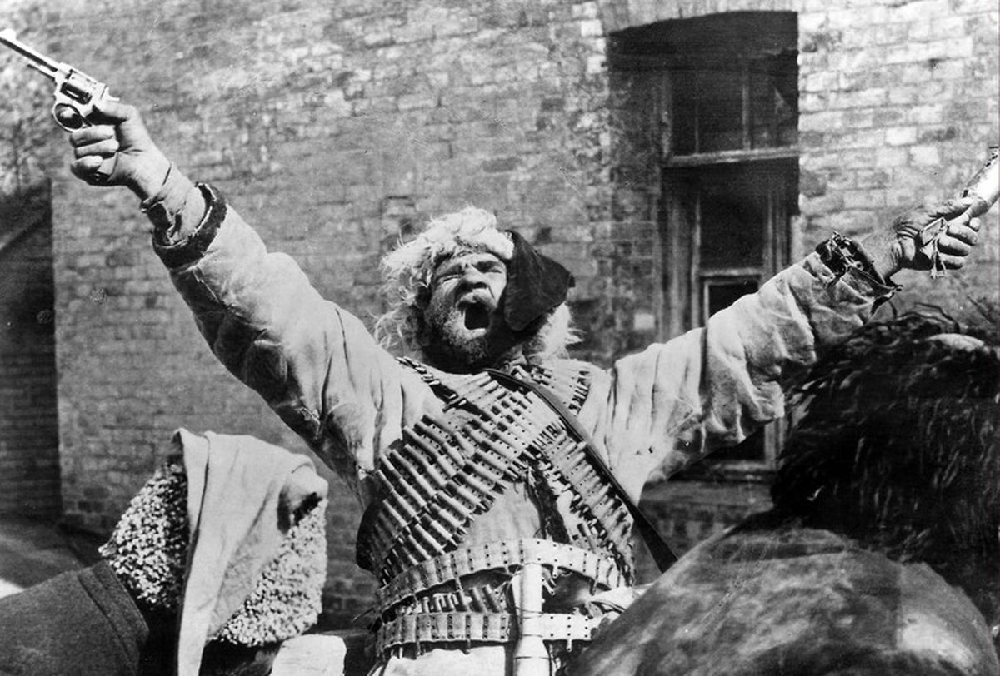
Кожна війна має своє обличчя, утворене мільйонами облич її учасників. Усі вони врешті стають обличчями персонажів фільмів про війну, а вираз цих облич — емоції, погляди, жести — персоніфікує для нас ці трагічні події в історії. Ніхто не знає, як усе насправді відбувалося, тому акторська гра стає замінником справжніх спогадів. Якщо актор має виразну зовнішність і грає переконливо, його зображення може затінити спогади про реальні події та створити «справжню» реальність, яку за бажання можна використовувати для пропаганди.
Це твердження найкраще ілюструє гра Семена Свашенка (Тимоша) у фільмі Олександра Довженка «Звенигора» (1928). Довженко — переконаний комуніст і водночас російський імперіаліст, який підлаштовував свої погляди, щоб уціліти й здобути прихильність Москви, — перетворив сценарій на типовий червоний агітплакат: фільм мав таврувати «український буржуазний націоналізм», висміяти Українську Народну Республіку й назавжди прив'язати зросійщених українців до московського більшовизму. Ця позиція призвела до конфлікту зі сценаристами Миколою (Майком) Йогансеном і Юрієм Тютюнником.
Довженко розповів про їхню реакцію у своїй автобіографії 1939 року:
«У сценарії було багато нісенітниць і явних націоналістичних тенденцій. Тому я переробив його на 90 відсотків, у результаті чого автори демонстративно «зняли свої прізвища», що стало початком мого розходження з харківськими письменниками».
На нараді українських письменників, скликаній ВУФКУ (Всеукраїнським фото-кіно управлінням) 13–14 вересня 1928 року, Йогансен також висловив свою незгоду з виробництвом фільмів, перенасичених пропагандистськими комуністичними мотивами:
«Звичайно, нам треба знімати більше фільмів з нашим радянським змістом, але такого типу, якими були американські фільми. А таких немає жодного. Не мені казати вам, які фільми пролетаріат любить найбільше, але ця прогалина не тільки не заповнюється, а навіть існує тенденція її уникати, і є небезпека загибелі художніх фільмів».
У підсумку автори «неправильного» сценарію, Йогансен і Тютюнник, були розстріляні, а Довженко отримав орден Леніна, дві Сталінські премії та одну Ленінську премію.
У цьому фільмі Семен Свашенко грає роль комуніста Тимоша, брат якого Павло — петлюрівець1 — тікає до Праги після падіння УНР і веде жалюгідне й абсурдне існування, постійно намагаючись покінчити з життям.
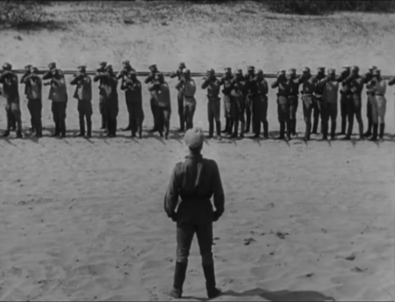
Тимош командує власним розстрілом. Кадр з фільму Олександра Довженка «Звенигора» (1928).
Довженко відверто знущається з УНР, прагнучи втоптати її спадщину в бруд. Цікаво, що в той час у Празі існувала значна дипломатична представленість УНР, що, очевидно, дратувало вірних ленінців.
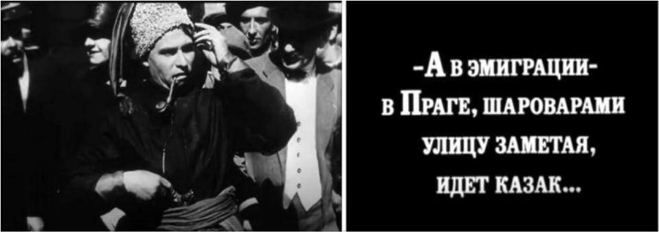
«І в еміграції, в Празі, замітаючи вулицю своїми широкими штанями, ходить козак...» Кадр з фільму Олександра Довженка «Звенигора» (1928).
Оскільки фільм німий, актори мусять компенсувати відсутність діалогу підкресленою театральною мімікою та приймати плакатні, навіть комічні пози. Семен Свашенко часто спалахує очима і робить напружені жести руками, що нагадують рухи робітника на сучасному автомобільному конвеєрі.
Це особливо помітно в сценах, що зображують Першу світову війну, коли він вдирається до німецьких окопів голіруч або командує власним розстрілом.
Талановитий актор Амвросій Бучма теж присвятив свій талант московській пропаганді. В одному зі своїх ранніх фільмів, «Макдональд», він висміював «гниючий Захід», а у «Подвигу розвідника», який дуже сподобався Сталіну, зобразив покірного малороса, агронома Лещука.
Після арешту розлючений німецький окупант допитує його:
«Українець чи росіянин?»
«В даному випадку це не має значення... Ну, українець», — відповідає він.
Бучма був провідним актором знаменитого театру «Березіль», агентом Чека2 і нагороджений орденом Леніна та двома Сталінськими преміями.
Проте важливо зазначити, що Бучма іноді виявляв яскраві людські емоції. Зокрема, вражає його триxвилинна роль задихаючогося німецького солдата в потужному експресіоністському фільмі Довженка «Арсенал». Цей божевільний, помираючий сміх із широко відкритим ротом, де бракує половини зубів, виглядає гротескно і особливо моторошно в контексті: здається, сама смерть насміхається.
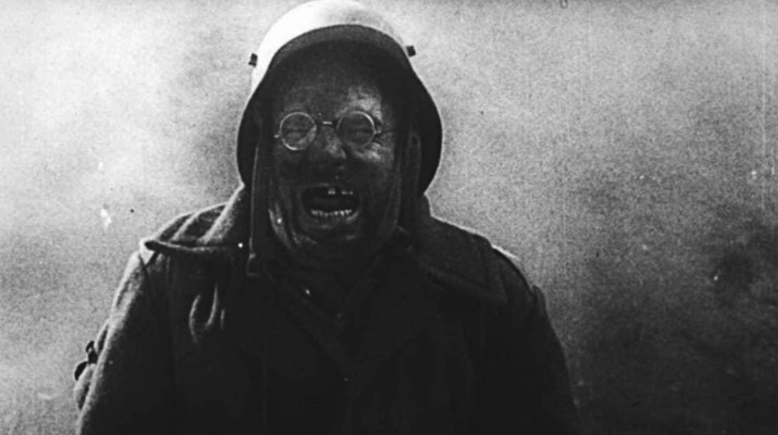
Амвросій Бучма як німецький солдат у фільмі Довженка «Арсенал» (1929).
Наталія Ужвій отримала орден Леніна за роль партизанки Олени Костюк у фільмі Марка Донського «Веселка» (1943). Потрапивши в полон до ворога, вона стикається зі страшним вибором:
Нацисти або розстріляють її новонародженого сина, або вона мусить видати своїх товаришів-партизанів.
Олена обирає вірність товаришам. Чи так воно було насправді? Як поводилися справжні жінки в подібних ситуаціях? Ми цього не дізнаємося з «Веселки», однак зображення Наталії Ужвій таке переконливе — повне пафосу й емоцій, — що глядачі відразу вірять у її відданість Леніну.
У цьому фільмі німці карикатурно жорстокі, розмовляють по-російськи з комічним німецьким акцентом, тоді як російська Олени Костюк завжди бездоганна. Нас переконують, що вона готова пожертвувати дитиною заради перемоги СРСР у Другій світовій війні.
У своїй книзі «Кіно і радіопропаганда в Другій світовій війні» дослідник Кеннет Шорт зазначив, що «Веселка» стала:
«Найбільш потужним і ефективним прикладом радянської пропаганди протягом усієї війни».
Американський посол у Москві особисто рекомендував фільм президенту США Франкліну Рузвельту для перегляду. У результаті він був відзначений:
- Великим призом Асоціації кінокритиків США
- Вищою нагородою Daily News за найкращий іноземний фільм в американському прокаті в 1944 році
- Призом Національної ради кінокритиків
Іван Миколайчук не лише зіграв Петра, сина музиканта Дзвонаря, у фільмі Юрія Іллєнка «Білий птах з чорною ознакою» (1971), але й був співавтором сценарію цього видатного твору.
Дія розгортається з 1937 по 1947 рік на Буковині в момент, коли Румунія втратила цю територію на користь Радянської України. Фільм Іллєнка виділяється серед більшості тогочасних картин не лише складними оригінальними образами, а й використанням української мови в діалогах.
Проте мова зберігає сильний місцевий західноукраїнський акцент, що робить частину діалогів важкодоступними. Вона уникає простих гасел, типових для пропаганди. Проте політичні теми все одно пронизують фільм.
Петро (Іван Миколайчук) сварився з гуцулом-упівцем3, бо той підтримує Гітлера, тоді як батько Петра поцілував руку радянського командира.
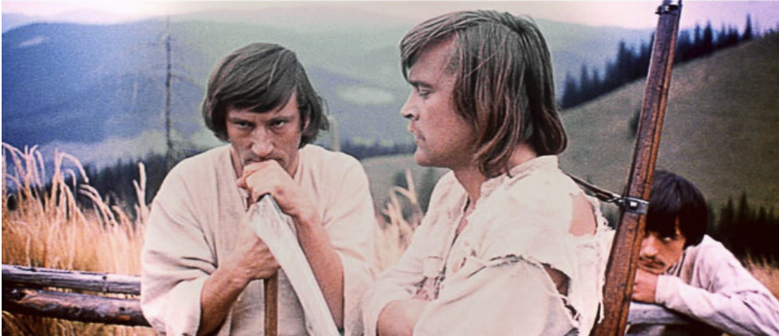
Іван Миколайчук (у профіль) як Петро, син музиканта Дзвонаря у фільмі Юрія Іллєнка «Білий птах з чорною ознакою» (1971).
Невипадково, що незабаром син Дзвонаря вступає до Червоної Армії, хоча й не з комуністичних міркувань: його вибір зумовлений передчуттям поразки нацистів. Тим часом брат Петра Орест приєднався до УПА, що призводить до трагічного конфлікту в родині Дзвонарів.
Миколайчуку вдається створити складний і суперечливий характер, що робить цей фільм безчасовим, на відміну від короткого появи Миколайчука в телесеріалі «Визволення» (артилерист Савчук, частина перша «Дуга вогню», 1968).
У короткій сцені Іван Миколайчук прицілюється у танки, що наступають, але отримує кулю в голову і падає. Російський капітан Сергій Цвєтаєв (Микола Олялін) швидко займає його місце, і за мить танк знищує артилерійський підрозділ.
Приголомшений Савчук кричить із явним українським акцентом:
«Товариш капітан, залишилося п'ять снарядів!»
Пізніше медсестра, закохана в Цвєтаєва, кидається на поле бою.
А де Савчук?
Це нікого більше не цікавить; він лише послужив непомітним тлом для героїчного російського капітана.
Цікаво, що російський актор Микола Олялін, який зіграв Цвєтаєва, того ж року перейшов до категорії українських акторів.
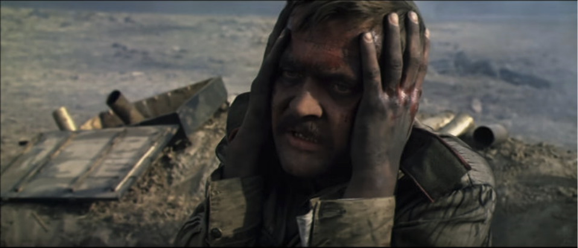
Іван Миколайчук як артилерист Савчук у телесеріалі Юрія Озерова «Визволення» (1968).
Хоча він не знав жодного слова по-українськи, знімався в проєктах кіностудії імені Довженка, виступав на українських культурних заходах, отримав орден князя Ярослава Мудрого, здобув звання Народного артиста України, був нагороджений довічною стипендією від президента Віктора Ющенка і похований на Байковому кладовищі4 в Києві.
Однак «українізація» не завадила Олялі брати участь у шовіністичному серіалі «Русский проєкт» (навіть разом із Нікітою Михалковим, який відчуває глибоку ненависть до України), що сприяло зростанню реваншизму і мілітаризму в російському суспільстві, яке врешті вилилося у війну.
Роль Леоніда Бикова у виконанні капітана Олексія Титаренка на прізвисько Маестро — командира другої ескадрильї — у радянській кінематографічній класиці «У бій ідуть одні старики» (1974) займає особливе місце серед українських кіноакторів.
Биков також зняв цей фільм, дозволивши собі вільності, що могли б не знайти схвалення навіть у СРСР 1974 року.
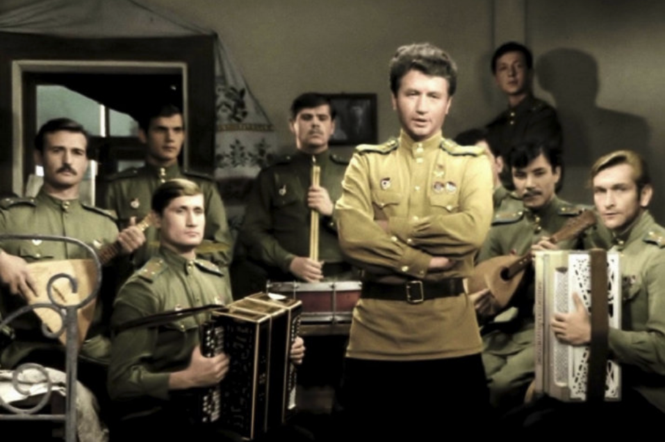
Леонід Биков в ролі капітана Олексія «Маестро» Титаренка у фільмі «У бій ідуть одні старики» (1974).
Його монолог:
«Як ви не помітили? Ми воювали сьогодні над моєю Україною!»
став поворотним моментом — вперше в радянському кіно Биков зображує активного, харизматичного, дотепного і навіть зухвалого українця так, як нам нині важко повністю оцінити.
Помітьте, як він відповідає:
«Будь ласка!»
по-українськи замість по-російськи.
У цьому контексті ці українські слова передають не подяку, а звучать майже як образа.
На жаль, цей талановитий фільм став одним із найяскравіших прикладів так званого «радянського героїчного наративу», що врешті проклав шлях для російської агресії проти України.
Під YouTube-публікаціями цього фільму чимало коментарів відлунює такі настрої:
«Як чітко зображено єдність радянських солдатів різних національностей у боротьбі з фашизмом».
Більше того, варто зазначити, що Міністерство культури Української РСР намагалося заборонити фільм.
Hlіб Шандибін, виконуючий обов'язки директора кіностудії імені Довженка, переконав начальника державного кінематографа Української РСР Василя Большака не створювати українського дублювання для цієї картини (що було вкрай незвично, бо зазвичай так не робили), заявивши:
«Зникне тема інтернаціоналізму».
Справді, справжній інтернаціоналізм можливий лише російською мовою!
Окрему спостереження заслуговує такий факт. Аналізуючи українські фільми XX століття, відчувається відчутна штучність в обмеженні української мови:
Якщо фільм мав потенціал для комерційного успіху і широкого прокату, він, швидше за все, існував виключно по-російськи.
Показовий випадок «За двома зайцями» (1961): фільм знятий по-українськи, але пізніше перекладений на російську, коли продюсери оцінили його комерційні перспективи; відповідно, український оригінал «загубився» на 52 роки, щоб бути знайденим пізніше в Маріупольському кінофонді.
Це кіносховище, до речі, містило понад 80 тонн необстежених кіноматеріалів, значна частина яких майже напевно загинула назавжди внаслідок знищення, влаштованого російськими загарбниками в 2022 році.
Принцип обмеження української мови в кіно зберігався ще тривалий час після розпаду СРСР у комерційному кіновиробництві, і лише в останні роки почав суттєво відходити в минуле.
Після розпаду СРСР актори, звільнившись від радянської цензури та тягаря російського імперіалізму, почали з'являтися в Україні, хоча це й не вирішувало складних художніх завдань.
Григорій Гладій встиг зіграти в «У бій ідуть одні старики» Леоніда Бикова (безіменного технічника «Кольта», Олександрова), але його найзначніша роль — Роман Шухевич у фільмі Олеся Янчука «Нескорений» (2000).
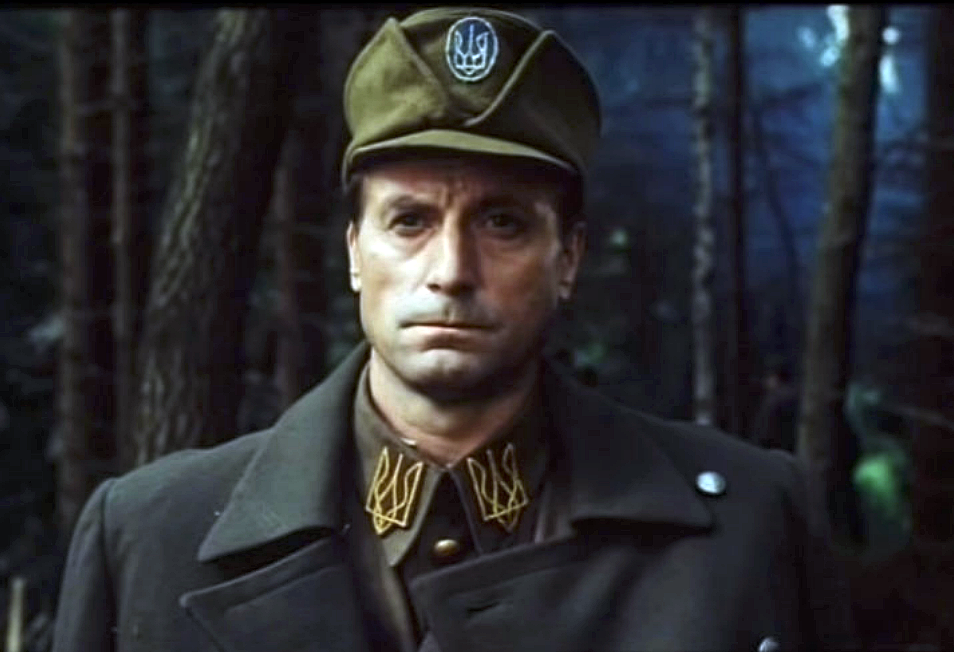
Григорій Гладій як Роман Шухевич у фільмі Олеся Янчука «Нескорений» (2000).
На жаль, незважаючи на керівництво Аскольда Лозинського, президента Світового конгресу українців, фільм дотримується близького до радянського «реалістичного» підходу, позбавленого яскравих художніх відкриттів або переконливих зображень.
Він нагадує маловиразні постановки кіностудії імені Довженка 1970-х.
Режисер Олесь Янчук, здається, або уникав творчого дослідження й нестандартних режисерських рішень, або просто міг не бути з ними знайомий.
Григорій Гладій також не намагається осягнути складний характер Романа Шухевича, лише проходячи по сценах і вимовляючи стерильні репліки, написані далеко не ідеальним сценарієм банальної костюмної драми.
Для ефективного художнього відтворення історичних подій у кіно недостатньо просто правильно одягнути акторів, забезпечити їх відповідними діалогами та почати знімати.
Робота справжнього митця вимагає більшого; кожен проєкт — це складне творче завдання без готових рішень, де жодна порада не є універсально чинною і ніхто не застрахований від помилок або невдач.
Натомість Євген Ламах, граючи старшого матроса Мишку у фільмі Тимура Ященка «Черкаси» (2014), досягнув вражаючих результатів у розумінні й відтворенні свого персонажа, незважаючи на молодість.
Євген Ламах як старший матрос Мишко у фільмі Тимура Ященка «Черкаси» (2014).
Мишко постає як складна й захоплива фігура:
- Спочатку представлений як нетямущий сільський хуліган, якого приваблює флот,
- Наприкінці фільму він перетворюється на трагічного героя з нації, яка вирішила не захищатися від російської агресії 2014 року.
Мишко вплутується у ключові історичні події, що формують його характер.
Важливо, що режисер Тимур Ященко уникає надмірного пафосу й пропаганди, показуючи неприємні сторони повсякденного життя; кожен персонаж його фільму має вади, що врівноважують героїчні зображення.
Євген Ламах також відіграє більш декоративну роль студента Андрія Савицького у фільмі Олексія Шапарєва «Крути 1918» (2019), що виглядає надто стандартно зрежисованим — як костюмна драма, де київські студенти ведуть штучні діалоги, більш придатні для театру ляльок, ніж для розповіді про українських героїв.
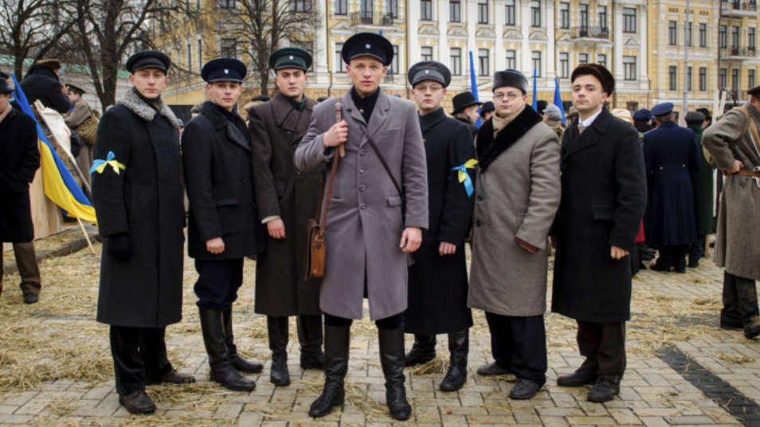
Євген Ламах як студент Андрій Савицький у фільмі Олексія Шапарєва «Крути 1918» (2019).
Їхні репліки виглядають такими ж незграбними й вимушеними, як і французькі акценти контррозвідників, яких грають українські актори.
Оксана Черкашина грає Тетяну, бойового медика, загартованого жорстокістю війни, у фільмі Наталії Ворожбіт «Погані дороги» (2020).
Цей фільм зачаровує унікальною і безпрецедентною точністю у відтворенні подій на екрані.
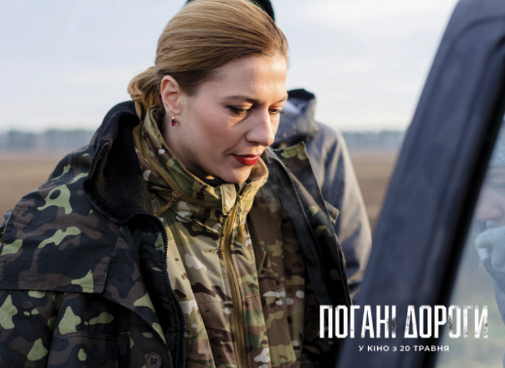
Оксана Черкашина як бойовий медик Тетяна у фільмі Наталії Ворожбіт «Погані дороги» (2020).
Здається, що режисер хронометрував кожну сцену секундоміром під час зйомок, із:
- Витонченими ракурсами
- Ретельно вибудуваними інтонаціями
- Кожним діалогом, що слугує захопленню аудиторії
Аудиторія майже відчуває себе зануреною в дію.
Наприклад, під час зворушливих спогадів Тетяни про загиблого коханого, фоновий вульгарний поп робить її слова значно ближчими до реальності.
Виникає враження, що говорить не Оксана Черкашина, а бойовий медик Тетяна, стираючи межу між виставою та документалістикою.
Особливо потужний момент — коли вона співає банальну, але мелодраматичну пісню російської поп-співачки Тані Буланової — її несподівана присутність у фільмі про воєнний героїзм є водночас зворушливою і художньо виправданою.
Марина Клімова також демонструє сильну гру у фільмі, виконуючи роль журналістки Юлії, взятої в полон терористом Стасом.
У її зображенні кожна репліка, вигук, схлипування та раптове непритомніння настільки розраховані й точні, що резонують як симфонія.
Наталя Половинка у ролі матері зниклого військового пілота Софії Кулик у фільмі Заза Буадзе «Матері апостолів» (2020) втілює стереотипний образ матері солдата на війні, готової на все заради своєї дитини.
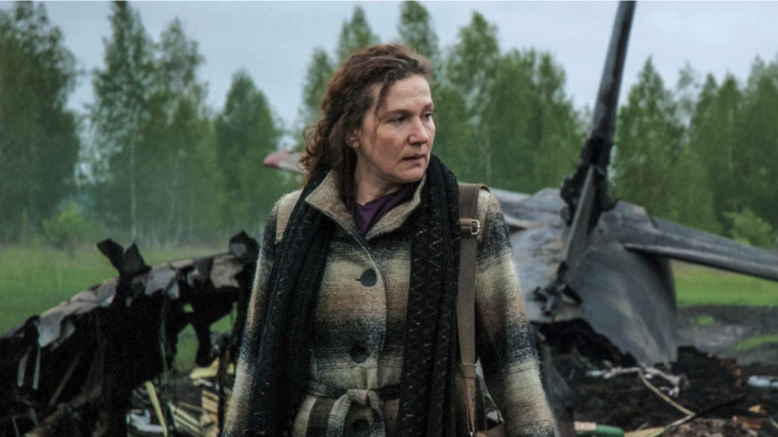
Наталя Половинка як мати зниклого військового пілота Софії Кулик у фільмі Заза Буадзе «Матері апостолів» (2020).
Софія вирушає на окупований Донбас, де зустрічає:
- Стереотипних терористів
- Стереотипну жінку-алкоголічку
- Стереотипного телевізійного журналіста
У певний момент глядач може відчути, що дивиться не фільм, а захоплюючу комп'ютерну гру під назвою «Вижити та втекти з ДНР»5.
У цьому фільмі Наталя Половинка не грає у традиційному сенсі; натомість вона старанно опрацьовує сценарій.
Режисер Буадзе, відомий передусім зйомкою телевізійної реклами та шоу — комерційна цінність яких будується на жорстких стереотипах, — використовує прийоми, покликані захопити глядачів і, відповідно, підвищити рейтинги. Очевидно, він продає цю історію аудиторії перевіреними комерційними методами і домагається успіху, навіть якщо стереотипне мистецтво позбавлене високих художніх достоїнств.
Воно є відображенням свого часу і може відкривати фрагменти правди про реальність.
Комік Георгій Делієв у ролі терориста Батяні (Попа) у фільмі Сергія Лозниці «Донбас» (2018) виглядає цілком органічно.
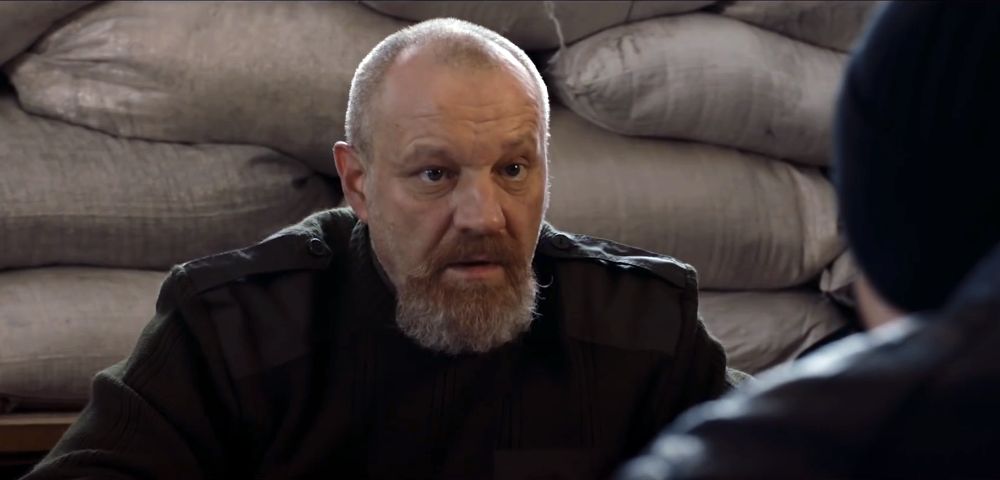
Георгій Делієв як терорист Батяня (Піп) у фільмі Сергія Лозниці «Донбас» (2018).
Усі терористи в окупованих регіонах — по суті блазні, що надає цирковий вигляд не лише цьому фільму, а й документальним кадрам із тих регіонів.
Персонаж «невисокого лисого чоловіка із сивою бородою», який переконує бізнесмена передати свою машину «повстанцям», виглядає автентично в зображенні Делієва.
Частково тому, що режисер Лозниця відтворює тональність оповіді, що нагадує жорстокий і кривавий цирк, влаштований на українській землі, окупованій росіянами.
В'ячеслав Довженко у ролі командира групи оборони Донецького аеропорту6 з позивним «Серпень» у фільмі Ахтема Сеітаблаєва «Кіборги» (2017) зіткнувся зі складним завданням автентичного відтворення героїчної боротьби.
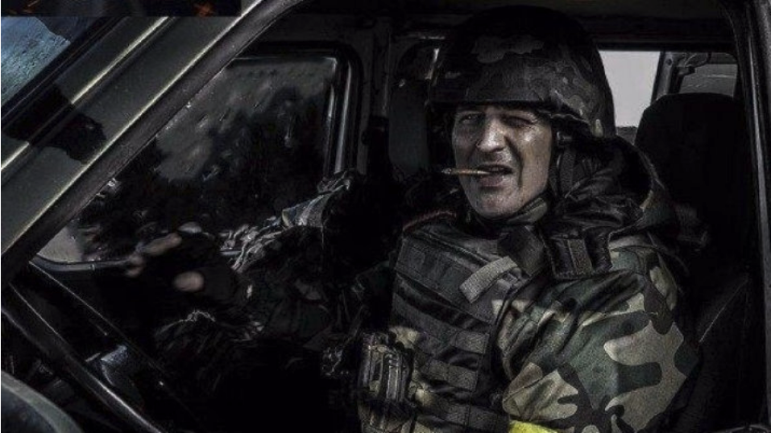
В'ячеслав Довженко як командир групи оборони Донецького аеропорту у фільмі Ахтема Сеітаблаєва «Кіборги» (2017).
Виклик:¶
- Уникнути дешевого й банального пафосу.
- Зобразити реалістичний сучасний бій.
- Збалансувати історичну точність і драматичну напруженість.
Тимур Ященко успішно подолав це у фільмі «Черкаси», обравши правильний акторський склад і показавши недоліки персонажів.
На противагу цьому, Сеітаблаєв обрав у своєму фільмі стиль гри Counter-Strike.
Це помітно в сценах із:
- Нічними рейдами і перестрілками в темних коридорах.
- Персонажами, що використовують тепловізори для виявлення ворогів.
Проте В'ячеслав Довженко виголошує важливий монолог:
«У цій війні недостатньо просто виконувати накази... ми мусимо думати, любити, відчувати несправедливість...
Ми воюємо не лише проти росіян і кадировців7, а й проти власне наших українців...
Ми мусимо вчитися, знати історію, аналізувати помилки.
Якщо ми тут, то погоджуємося платити за минуле.»
Ця перспектива є критичною після багатьох років слухняної державної кінопропаганди, де все було зрозуміло від початку.
Справжній фільм повинен:
✅ Кидати виклик переконанням глядачів
✅ Спонукати до сумніву, а не до сліпої довіри
✅ Виховувати критичний погляд на реальність
Сцена у фільмі Сеітаблаєва не могла б з'явитися в попередніх патріотичних творах:
Коли один солдат вигукує: «Я люблю Україну!», інший голосно сміється, відчуваючи фальш у цьому, і жартує: «Пропаганда в дії!»
Раніше фільми можна було класифікувати як:
- «Успішну» пропаганду
- «Менш успішну» пропаганду
Тепер, вперше, сумнів сміливо вимовляється на екрані:
Любов до України може бути нещирою, а лише результатом пропаганди.
Усвідомлення цього знаменує потенційний якісний зсув у наративі українського кіно.
Реальність складна і багатогранна.¶
Адекватне її відтворення на екрані вимагає значних зусиль, що засвідчують роботи найвідоміших світових метамодерних митців.
Слід сподіватися, що українські режисери також приймуть цю тенденцію.
Виноски¶
-
Послідовник або прихильник Симона Петлюри — видатного українського політичного і воєнного діяча доби Визвольної боротьби (1917–1921). Петлюра був головою Директорії Української Народної Республіки та ключовою постаттю в боротьбі за незалежність України після падіння Російської імперії. ↩
-
ЧК (скорочення від «Всеросійська надзвичайна комісія з боротьби з контрреволюцією та саботажем») — перша таємна поліцейська організація, заснована в Радянській Росії в 1917 році за Леніна. Вона уславилася жорстокими методами, включаючи арешти, розстріли та використання таборів примусової праці. ЧК стала попередницею пізніших радянських спецслужб — НКВС і КДБ. ↩
-
Гуцули — субетнічна група українців, що проживає в Карпатах, переважно в Західній Україні. УПА (Українська Повстанська Армія) — українська націоналістична воєнна організація, сформована під час Другої світової війни в 1942 році. Її основна мета полягала в боротьбі за незалежність України, чинячи опір як нацистській Німеччині, так і Радянському Союзу. ↩
-
Байкове кладовище — Historic Cemetery in Holosiivskyi District of Kyiv, national historic monument. Відоме як некрополь видатних людей. ↩
-
Донецька Народна Республіка (ДНР) — самопроголошене, невизнане сепаратистське утворення, засноване в 2014 році в Донецькому регіоні Східної України. За підтримки Росії ДНР відігравала центральну роль у війні на Донбасі. Україна та більшість міжнародного співтовариства вважають ДНР незаконним утворенням під російською окупацією. ↩
-
Донецький аеропорт у 2014–2015 роках став символічним і стратегічним осередком збройного конфлікту. Українські солдати, прозвані «Кіборгами» за свою стійкість, захищали його 242 дні. Інтенсивні бої стали символом українського опору. Зрештою, у січні 2015 року сепаратисти захопили руїни. ↩
-
Кадирівці — чеченські паравоєнні формування, лояльні Рамзану Кадирову, главі Чечні і союзнику Путіна. Вони функціонують як частина російського воєнного апарату і відомі своєю жорстокістю та порушеннями прав людини. ↩